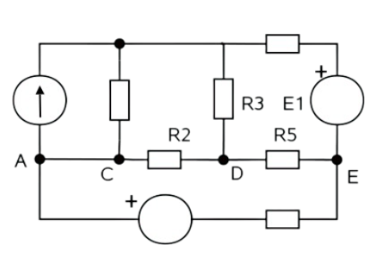
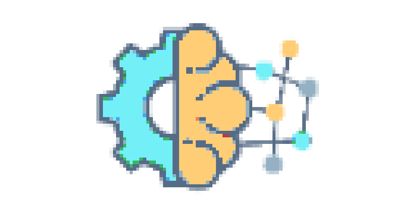
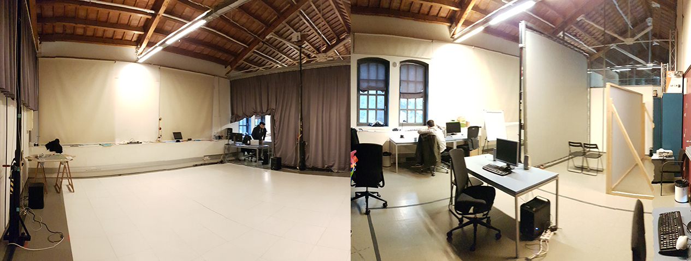
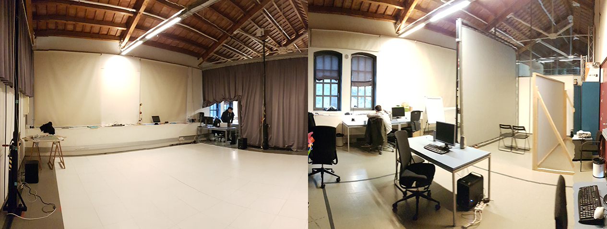
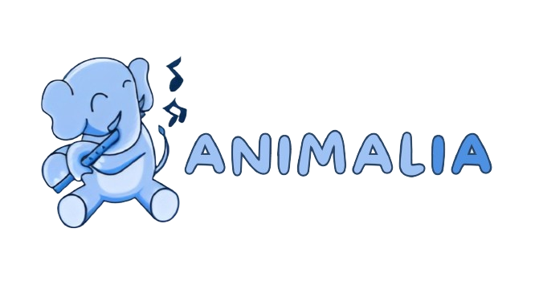
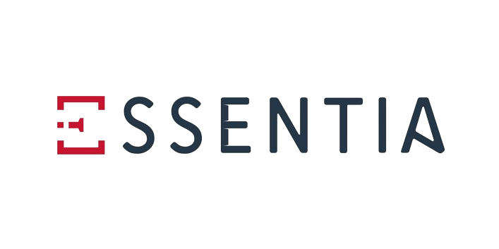
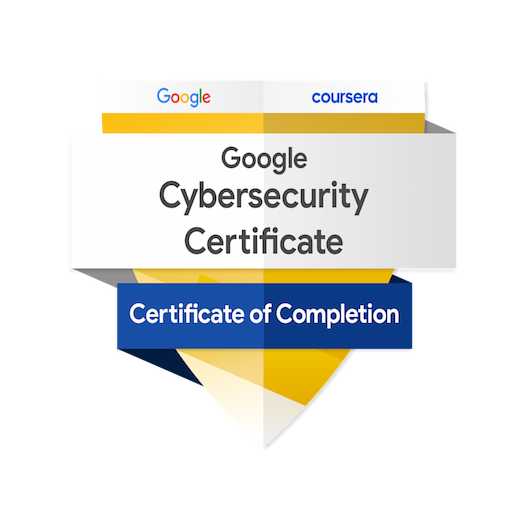

En la asignatura de Cálculo I, se abordan dos bloques principales: el cálculo diferencial y el cálculo integral.
1. Cálculo Diferencial:
• Estudio de la derivada y las funciones de variable real.
• Uso de la regla de la cadena para la derivación de funciones.
• Aplicaciones de la derivada, incluyendo la optimización y el estudio gráfico de funciones.
• Límite de una función y su continuidad.
• Teorema de l’Hôpital.
• Órdenes de infinitos e infinitesimales y las expresiones asintóticas.
• Estudio de polinomios y series de Taylor para la aproximación de funciones.
2. Cálculo Integral:
• Estudio de las funciones primitivas y el teorema fundamental del cálculo.
• Cálculo de integrales definidas y la función integral.
• Aplicaciones de la integral, incluyendo operaciones en gráficos y cálculo de la media y la varianza.
• Estudio de las series de Fourier para la aproximación de funciones.
En el curso de Matemática Discreta, abordé temas esenciales para las matemáticas y sus aplicaciones en ingeniería, proporcionando una base sólida en razonamiento matemático, estructuras discretas, y análisis combinatorio.
1. Razonamiento Matemático:
• Lógica proposicional: sintaxis, equivalencia, deducción.
• Cuantificación.
• Métodos básicos de demostración: directa, contradicción, no constructiva, inducción.
• Definiciones recursivas.
2. Estructuras Discretas:
• Conjuntos.
• Grafos: coloreado, conectividad.
• Árboles: no dirigidos, con raíz, recorridos en árboles.
• Relaciones: de equivalencia, conjuntos parcialmente ordenados.
3. Análisis Combinatorio:
• Permutaciones y combinaciones: con y sin repetición.
• Números binomiales y multinomiales.
• Principio de las cajas.
• Principio de inclusión-exclusión.
La asignatura de Introducción a la Programación establece las bases de la algoritmia y la programación,
permitiendo aprender a programar en cualquier lenguaje. Se abordan los siguientes temas:
1. Introducción. Conceptos básicos: Se abordan los conceptos fundamentales de la programación.
2. Tipo de datos básicos. Variables, expresiones, asignaciones: Se estudian los tipos de datos básicos en Python, cómo declarar variables, y cómo realizar asignaciones y expresiones.
3. Control de flujo de ejecución: Se enseña cómo controlar el flujo de ejecución en un programa, incluyendo estructuras de control como bucles y condicionales.
4. Funciones. Diseño descendente: Se introduce el concepto de funciones en Python y cómo se utiliza el diseño descendente para estructurar un programa.
5. Tipo de datos compuestos. Listas y tuplas: Se estudian los tipos de datos compuestos en Python, incluyendo listas y tuplas.

La asignatura se divide en dos partes principales: la Introducción a la Universidad y la Introducción al sector, empresa y mercado de las TIC:
1. Introducción a la Universidad:
• Conocimiento de los recursos y servicios principales del campus/UPF.
• Comprensión de las características generales de la universidad y los servicios a la comunidad universitaria.
• Entendimiento de la estructura de los estudios universitarios y la normativa académica.
• Familiaridad con las metodologías docentes y las competencias transversales.
2. Introducción al sector, empresa y mercado TIC:
• Participación en debates y trabajos.
• Conocimiento del perfil socio-profesional del/a ingeniero/a TIC.
• Comprensión de los actores y la estructura del sector TIC.
• Conocimiento de los mercados y servicios de infraestructuras y servicios.
• Conocimiento de los aspectos de género, ética y responsabilidad en la ingeniería TIC.
• Conocimiento de casos específicos en ciencias de datos y en el ámbito audiovisual.
• Desarrollo de métodos de aprendizaje, colaboración en equipo y comunicación oral / escrita.
• Conocimiento sobre el uso de los datos personales.
La asignatura de Cálculo II se centra en el estudio de funciones en varias variables, derivadas parciales, optimización, integrales dobles, superficies cálculo vectorial y operadores.
1. Espacio Euclideo n-dimensional y Funciones en Varias Variables:
• Introducción al espacio Euclideo real n-dimensional.
• Funciones a valores vectoriales y operaciones entre ellas.
• Concepto de funciones componentes de funciones a valores vectoriales.
2. Curvas y Superficies:
• Curvas suaves, rectas tangentes, longitud de una curva y la integral de línea.
• Superficies, sus curvas de nivel, y ejemplos de cónicas y cuádricas.
3. Cálculo Diferencial en Varias Variables:
• Derivadas parciales, derivadas direccionales y teorema del gradiente.
• Derivadas de orden superior, regla de la cadena y Matriz Jacobiana y Hessiana.
4. Optimización en Varias Variables:
• Extremos libres, vinculados y Técnica de los multiplicadores de Lagrange.
5. Integrales Dobles y Cambio de Variables.
6. Integral de Superficie y Operadores del Cálculo Vectorial:
• Flujo de un campo vectorial y teorema de la divergencia.
}
La asignatura de Álgebra Lineal se centra en el estudio de espacios vectoriales, aplicaciones lineales, ortogonalización, y matrices simétricas.
1. Números Complejos:
• Esta sección introduce el concepto de números complejos, que son fundamentales en muchas áreas de las matemáticas y la ingeniería.
2. Espacios Vectoriales:
• Aquí se estudian los espacios y subespacios vectoriales, la independencia lineal, la dimensión y las bases. Estos conceptos son esenciales para entender cómo se pueden representar y manipular objetos matemáticos en un espacio.
3. Aplicaciones Lineales:
• Parte se centra en las aplicaciones lineales, que son funciones entre espacios vectoriales que preservan las operaciones de adición de vectores y multiplicación por escalares.
4. Ortogonalización:
• En esta sección se introduce el concepto de ortogonalización, que es un proceso para construir un conjunto de vectores que son ortogonales (perpendiculares) entre sí.
5. Vectores y Valores Propios:
• Aquí se estudian los vectores y valores propios,
donde tienen numerosas aplicaciones en ciencias e ingeniería.
6. Matrices Simétricas:
• Se estudian las matrices simétricas, tipo especial de matrices
con propiedades únicas que las hacen útiles en muchas aplicaciones.
La asignatura de Estructura de Datos y Algoritmos I se centra en varios aspectos clave:
1. Programación en C:
• Se enfoca en el desarrollo de habilidades en la programación en C, incluyendo la implementación de estructuras de datos y algoritmos.
2. Gestión de Memoria:
• Se aborda el acceso de memoria directo e indirecto, el concepto de dirección de memoria y puntero, y la gestión de memoria dinámica en un programa.
3. Estructuras de Datos:
• Se estudia cuándo y cómo implementar una estructura de datos en memoria estática o dinámica.
4. Recursividad:
• Se introduce la recursividad y la anidación del retorno, y se enseña a pensar y diseñar algoritmos recursivos.
5. Depuración y Pruebas:
• Se enseña a usar el debugger y las trazas para verificar un código,
y a definir una prueba y un banco de pruebas para verificar código.
6. Lectura de Código:
• Se fomenta la habilidad de entender código C escrito
por otros programadores a una velocidad razonable.
La asignatura de Organización de Computadores se centra en el estudio de la estructura básica de un computador y cómo es capaz de ejecutar programas:
1. Introducción al lenguaje ensamblador MIPS y sus estructuras más básicas:
• Se introduce la arquitectura básica Von Neuman y sus elementos principales.
• Se estudia la aritmética binaria, el lenguaje máquina y el lenguaje ensamblador.
• Se aborda la declaración de datos, datos en memoria, carga y almacenamiento de datos, operaciones aritméticas, lógicas y de desplazamiento, operaciones de salto condicional y de comparación, y estructuras de control condicional y de repetición.
2. Traducción de códigos de alto nivel en MIPS y uso de memoria:
• Se estudia la representación de registros, matrices y punteros.
• Se introduce el concepto de subrutinas y estructuras de datos: la Pila.
• Se aborda la jerarquía de la memoria, la organización y operaciones de la memoria principal, y la memoria de Cache.
Además, se fomenta el trabajo en equipo, el razonamiento crítico,
aprendizaje autónomo, y la creatividad y adaptación a nuevas situaciones.
Se utiliza el simulador MARS para analizar la ejecución
de los programas propuestos.
La asignatura de Redes se centra en el estudio de los protocolos e interfaces de comunicación en los diferentes niveles de una arquitectura de redes, con un enfoque especial en la familia de protocolos de Internet TCP/IP:
1. Introducción:
• Se introduce el curso y se establecen los fundamentos de las redes de comunicación.
2. Transmisión / Recepción de bits a través de canales físicos:
• Se estudia cómo se transmiten y reciben los bits a través de canales físicos en una red.
3. Comunicación salto a salto:
• Se aborda el concepto de comunicación salto a salto, fundamental para entender cómo se transmiten los datos a través de una red.
4. Direccionamiento IP:
• Se estudia el direccionamiento IP, que es esencial para la identificación de dispositivos en una red.
5. Enrutamiento y reenvío:
• Se aborda el enrutamiento y reenvío, que son procesos clave para la entrega de paquetes de datos en una red.
6. Comunicación de extremo a extremo:
• Se estudia la comunicación de extremo a extremo,
que es un principio fundamental de las redes de comunicación.
7. Aplicaciones de Internet:
• Se exploran las diversas aplicaciones de Internet, proporcionando
una visión práctica de cómo se utilizan las redes en el mundo real.
La asignatura de Métodos Numéricos se centra en el estudio y aplicación de métodos numéricos para resolver problemas matemáticos que pueden surgir en la ingeniería:
1. Introducción a los métodos numéricos y la solución numérica de ecuaciones diferenciales:
• Se introduce el concepto de métodos numéricos y se estudia el Método de Euler para la solución numérica de ecuaciones diferenciales.
2. Estados, simulación, visualización, Processing:
• Se abordan los conceptos de estados, simulación y visualización, y se utiliza Processing como herramienta.
3. El muelle elástico y los métodos de un paso:
• Se estudia el muelle elástico y se introducen los métodos de un paso para su análisis.
4. Métodos avanzados, convergencia, estabilidad:
• Se exploran métodos avanzados y se estudian los conceptos de convergencia y estabilidad en el contexto de los métodos numéricos.
5. EDPs: Ecuaciones de ondas y Calor1D+t y Soluciones Numéricas:
• Se introducen las ecuaciones diferenciales parciales (EDPs), específicamente las ecuaciones de ondas y calor, y se estudian sus soluciones numéricas.
6. EDPs 2D + t:
• Se profundiza en el estudio de las ecuaciones diferenciales
parciales en dos dimensiones y en función del tiempo.
La asignatura de Estructuras de Datos y Algoritmos II se centra en el estudio y aplicación de estructuras de datos complejas y algoritmos para su manipulación:
1. Concepto de algoritmo, estructura de datos, estructuras de datos simples:
• Se repasan los conceptos de algoritmo y estructura de datos, y se estudian las estructuras de datos simples: lista, pila, cola.
2. Complejidad y Algoritmos de Ordenación
• Se introduce el concepto de complejidad y se estudian los algoritmos de ordenación: burbuja e inserción, y se analiza su complejidad.
4. Técnicas de Programación y Árboles:
• Se introduce la técnica de programación “dividir para conquistar”, se estudian QuickSort y MergeSort, y se abordan los árboles, árboles binarios y de búsqueda, y los algoritmos sobre árboles.
6. Heap y Heapsort:
• Se introduce el concepto de Heap y se estudia el algoritmo de ordenación Heapsort.
7. Técnica de programación dinámica:
• Se introduce la técnica de programación dinámica (edit distance, etc.).
8. Grafos y algoritmos en grafos:
• Se estudian los grafos y los algoritmos en grafos (Dijktra, Prim).
La asignatura de Fundamentos de Física se centra en los conceptos básicos de la física y su aplicación en la ingeniería:
1. Dinámica, Trabajo y Energía:
• Se estudian conceptos básicos de dinámica, trabajo y energía, enfocados hacia el movimiento armónico simple.
2. Oscilaciones:
• Se estudia el oscilador masa-muelle y el péndulo simple.
3. Ondas:
• Se introducen conceptos básicos sobre las ondas y se estudia la propagación de ondas y la energía.
4. Electrostática:
• Se empieza con los conceptos de la electrostática y luego se pasa a la explicación de los conductores.
5. Corriente eléctrica:
• Se introduce la corriente eléctrica, introduciendo algunos elementos que pueden encontrarse en los circuitos más simples.
6. Magnetostática, Inducción electromagnética y Circuitos:
• Se introducen varios conceptos de magnetostática
para facilitar la comprensión de la inducción electromagnética.
También se introducirán circuitos más complejos.

La asignatura de Probabilidad se centra en los conceptos básicos de la probabilidad y su aplicación en la ingeniería:
1. Modelos probabilísticos y Probabilidad Condicionada:
• Se estudian los modelos probabilísticos, los conceptos básicos de la probabilidad y la probabilidad condicionada y los teoremas de las probabilidades totales y de Bayes.
2. Variables aleatorias y Esperanza y varianza:
• Se estudian las variables aleatorias, la esperanza y la varianza, sus propiedades, la desigualdad de Chebyshev, y los conceptos de independencia, covarianza y correlación.
3. Familias de distribuciones discretas:
• Se estudian las familias de distribuciones discretas, incluyendo la Bernoulli, Binomial, Geométrica, Binomial Negativa, Multinomial, hipergeométrica y Poisson.
4. Familias de distribuciones Continuas:
• Se estudian las familias de distribuciones continuas, incluyendo la Uniforme, Normal, Exponencial, Gamma, Beta, Gaussiana 2D y Dirichlet.
5. Teorema Central del Límite:
• Se introduce el Teorema Central del Límite y la aproximación Normal a la Distribución Binomial.
6. Simulación computacional de Variables Aleatorias:
• Se estudia la simulación computacional de variables aleatorias
y los métodos de Monte Carlo.

La asignatura de Programación Orientada a Objetos se centra en los conceptos básicos de la programación orientada a objetos y su aplicación en la ingeniería:
1. Introducción: el concepto de objeto:
• Se introduce la definición intuitiva de un objeto y cómo se utilizan en la programación.
2. El paradigma de la programación orientada a objetos:
• Se estudian los conceptos clave del paradigma de la programación orientada a objetos, como la clase, la instancia, la jerarquía de clases, la abstracción y la encapsulación.
3. Modelado de objetos y relaciones entre objetos:
• Se introduce el diseño de clases, técnicas de modelado de objetos y relaciones entre objetos.
4. Técnicas fundamentales: herencia y polimorfismo:
• Se estudian las técnicas fundamentales de la programación orientada a objetos, como la herencia, el polimorfismo, la sobrecarga y la reescritura.
5. Conceptos avanzados: interfaces y clases abstractas:
• Se introducen conceptos avanzados, como los métodos abstractos, las clases abstractas, las interfaces y la conexión de objetos mediante interfaces.
6. Reutilización y estudio de problemas resueltos con objetos:
• Se introduce el concepto de reutilización y se estudian
casos particulares de problemas resueltos con objetos.
7. Implementación de interfaces:
• Se estudia la implementación de interfaces y
la definición de un API concreto.

La asignatura de Señales y Sistemas I se centra en los conceptos básicos de las señales y sistemas y su aplicación en la ingeniería:
1. Introducción a las Señales y Sistemas:
• Se introduce la definición de señales, sistemas en ingeniería y su representación matemática.
2. Sinusoides:
• Se estudian las funciones seno y coseno, las señales sinusoidales, las sinusoides complejas y los fasores.
3. Representación espectral de señales temporales:
• Se introduce la representación espectral de señales temporales, incluyendo el espectro de suma de sinusoides y la modulación de amplitud.
4. Muestreo y Aliasing:
• Se estudia el muestreo, el teorema de muestreo, el aliasing y la conversión de señales discretas a continuos.
5. Filtros de respuesta impulsional Finita, FIR:
• Se introduce el concepto de filtros FIR y se estudia la respuesta impulsional de los filtros FIR.
6. Transformada Z:
• Se estudian las propiedades de la transformada Z y
su relación con los sistemas lineales.
7. Filtros de respuesta impulsional Infinita, IIR:
• Se introduce el concepto de filtros IIR y se estudia la respuesta
en el dominio temporal y la respuesta frecuencial de un filtro IIR.
La asignatura de Diseño Funcional de Programas se centra en los conceptos básicos de los lenguajes funcionales:
1. Elementos de Lenguajes Funcionales:
• Se estudian las funciones como entidades de primera clase, la programación libre de efectos, la inmutabilidad, la búsqueda de patrones y las operaciones de orden superior.
2. Conceptos de Diseño Funcional:
• Se introducen las clausuras de funciones, la inferencia de tipos y el polimorfismo, y la evaluación perezosa.
• Se estudian la memoization, los objetos infinitos y las mónadas.
4. Tópicos en Desarrollo Funcional de Software:
• Se introduce el procesamiento de datos estructurados y el test de programas funcionales.
• Se introduce la introducción a los algoritmos paralelos.
La asignatura de Estadística se centra en los conceptos básicos de la estadística y su aplicación en la ingeniería:
1. Estadística descriptiva:
• Se introduce la estadística descriptiva, que se utiliza para resumir y describir los datos.
2. Estimación de parámetros e Intervalos de confianza:
• Se estudia la estimación de parámetros y los intervalos de confianza, que se utilizan para estimar los parámetros de una población a partir de una muestra.
3. Tests de hipótesis (Test Z, Test T, valor P):
• Se introducen los tests de hipótesis, que se utilizan para tomar decisiones sobre las características de una población basándose en una muestra.
4. Regresión lineal (ANOVA, Intervalos y Tests) y multilineal :
• Se estudia la regresión lineal y multilineal, que se utilizan para modelar la relación entre una variable dependiente y una o más variables independientes.
5. Métodos no paramétricos (Bootstrapping, y Tests del signo y del Rango):
• Se introducen los métodos no paramétricos, que se utilizan cuando los datos no cumplen con los supuestos de los métodos paramétricos.
6. Inferencia bayesiana:
• Se introduce la inferencia bayesiana, que es un enfoque de la
estadística en el que se actualizan las probabilidades de las hipótesis
a medida que se disponen de más evidencias.

La asignatura de Sistemas Operativos explica la utilidad del sistema operativo como un enlace entre las aplicaciones informáticas (software) y el nivel físico (hardware):
1. Componentes de un sistema operativo:
• Estudia los elementos que integran un ordenador, los tipos de sistemas operativos, y los componentes de un sistema operativo.
2. Gestión de Procesos:
• Analiza los elementos necesarios para crear un programa concurrente, el bloque de control de procesos (PCB), y las estrategias de planificación de CPU.
3. Gestión de Memoria:
• Analiza el espacio de memoria de procesos, los tipos de gestión de memoria, y la segmentación y paginación de memoria.
4. Dispositivos de entrada/salida:
• Analiza las características de dispositivos de entrada y salida, el concepto de "buffer", y la comunicación entre procesos mediante tubos (pipes).
5. Sistema de ficheros:
• Describe los tipos de ficheros existentes, las operaciones posibles
aplicables a ficheros, y los mecanismos disponibles
para protección de ficheros.

La asignatura de Gráficos por Ordenador se centra en el estudio y aplicación de técnicas de visualización y modelado en 3D:
1. Introducción:
• Presenta una visión general de la asignatura y sus objetivos.
2. Rasterización-Muestreo-Antialiasing:
• Estudia las técnicas de rasterización, muestreo y antialiasing en gráficos por ordenador.
3. Conceptos básicos de luz y color:
• Introduce los conceptos fundamentales de luz y color en la visualización gráfica.
4. Modelos y sistemas de coordenadas:
• Examina los diferentes modelos y sistemas de coordenadas en gráficos.
5. Iluminación básica:
• Explora los conceptos y técnicas de iluminación básica en gráficos por ordenador.
6. Texturizado:
• Estudia las técnicas de texturizado en gráficos por ordenador.
7. Modelos y representación:
• Analiza los diferentes modelos y técnicas de representación en gráficos por ordenador.
8. Animación:
• Introduce las técnicas de animación en gráficos por ordenador.
9. Aspectos avanzados:
• Cubre temas avanzados como la ecuación del transporte de luz y
la realidad virtual.
La asignatura de Diseño de Algoritmos se centra en el estudio y aplicación de diferentes técnicas de diseño de algoritmos y teoría de la complejidad:
1. Algoritmos Divide & Conquer:
• Estudia el algoritmo Mergesort, un algoritmo de ordenación que utiliza la técnica Divide & Conquer, y el cálculo de inversiones, una técnica para contar las inversiones en una secuencia.
2. Algoritmos voraces:
• Analiza la programación de intervalos, un problema que se resuelve con una estrategia voraz, y el algoritmo de Kruskal para encontrar el árbol de expansión mínima en un grafo.
3. Programación dinámica:
• Estudia la programación de intervalos ponderados, un problema de optimización que se resuelve con programación dinámica, y el problema de la mochila, un problema clásico de optimización combinatoria.
4. Teoría de la complejidad:
• Introduce las clases de complejidad P y NP, que agrupan
los problemas según su dificultad, y la NP-completitud,
una propiedad de ciertos problemas en NP para los
que no se conoce un algoritmo eficiente.
La asignatura de Aprendizaje Automático se centra en los conceptos básicos del Machine Learning y su aplicación en la ingeniería:
1. Introducción:
• Se introduce el aprendizaje automático, un campo de la inteligencia artificial que se centra en el desarrollo de algoritmos y modelo.
2. Métodos no Supervisados: clustering:
• Técnicas que agrupa los datos en clusters o grupos basándose en su similitud.
3. Modelos Generativos: la Gausiana y Mixtura de Gausianas:
• Modelos generativos, que estiman la distribución de probabilidad de los datos como la Gausiana y la mixtura de Gausianas.
4. Análisis de Componentes Principales y Métodos de Conjunto para Clasificación:
• Análisis de componentes principales (PCA), una técnica de reducción de dimensionalidad.
• Técnicas que combinan las predicciones para mejorar la precisión de la clasificación.
6. Teoría de decisión Bayesiana y Support Vector Machine:
• Se estudia la teoría de decisión Bayesiana y Support Vector Machines son un tipo de modelo de aprendizaje supervisado que se utiliza para la clasificación y la regresión.
7. Modelos lineales para la regresión y la clasificación:
• Técnicas que asume una relación lineal entre las variables de entrada y de salida.
8. Aprendizaje profundo:
• Se introduce el aprendizaje profundo, un subcampo del
aprendizaje automático que se centra en las redes neuronales artificiales.

La asignatura de Ingeniería de Interacción se centra en los conceptos básicos del diseño, implementación y evaluación de interfaces gráficas de usuario (GUI):
1. Introducción:
• Se introduce la interacción humana con la computadora, la interfaz, la interfaz gráfica de usuario (GUI), el diseño contextual y la Ingeniería de Usabilidad.
2. Resultados del aprendizaje:
• Capaz de diseñar, desarrollar y evaluar sistemas interactivos considerando conceptos y métodos de ingeniería de interacción.
3. ¿Qué es la interacción y qué es una interfaz?:
• Se define la interacción y la interfaz y se presentan los equipos de interacción y de interfaz.
4. Comprensión del usuario y el contexto:
• Se presenta una investigación contextual y se realiza una consulta de contextos para un caso de ejemplo.
5. Diseño centrado en el uso:
• Se presentan los roles de usuario, los casos de uso, el contenido y el mapa de navegación.
6. Prototipado y Evaluación de Usabilidad:
• Se introduce el prototipo, el modelo de nivel de pulsación
de tecla, las herramientas de prototipado y
se realiza una prueba de usabilidad.
La asignatura de Introducción a la Programación Paralela y Distribuida se centra en los siguientes conceptos básicos de la programación paralela y distribuida:
1. Introducción:
• Se introduce la historia de las máquinas paralelas, el paralelismo a nivel de instrucción, la jerarquía de memoria y caché, y la taxonomía de Flynn.
2. Análisis de rendimiento:
• Se estudia el análisis de rendimiento, la Ley de Amdahl, el speedup, la eficiencia, las métricas de rendimiento y el profiling de aplicaciones paralelas y distribuidas.
3. Memoria compartida:
• Se introduce la arquitectura multinúcleo, el hyperthreading, la API de OpenMP, los schedulers de OpenMP y los overheads de OpenMP.
4. Memoria distribuida:
• Se estudia la distribución del cómputo con el estándar MPI, la comunicación punto a punto, la comunicación one to all, la comunicación all to all, los tipos de datos derivados y el MPIO.
5. Aceleradores:
• Se introduce la arquitectura GPU y el modelo SIMT, la programación de aceleradores con OpenACC y la programación de GPU de Nvidia con CUDA.
6. Modelos híbridos:
• Se estudian los modelos híbridos
en la programación paralela y distribuida.
La asignatura de Ingeniería de Software se centra en los conceptos básicos y ciclos de la ingeniería de software:
1. Introducción:
• Se introduce la noción de ingeniería de software, la relación de la ingeniería de software con los ámbitos profesionales de la informática y con otras profesiones, y el ciclo de vida de los productos de software y sus modelos.
2. Ingeniería de requerimientos:
• Se estudia la definición y clasificación de tipos de requerimientos, los elementos de un documento de requerimientos y formalismos asociados, y el ciclo de vida de los productos.
3. Metodologías:
• Se describen diferentes ejemplos de metodologías, como las metodologías Agile.
4. El modelado con UML:
• Se introduce el modelado visual y el uso de lenguajes como UML, y se estudian los principales diagramas UML y los elementos incluidos.
5. Análisis y diseño orientado a objetos:
• Se estudian la definición y propiedades de los objetos, la definición y propiedades de las clases, las relaciones de herencia, composición, agregación, asociación y dependencia, y el polimorfismo y las jerarquías de herencia.
6. Herramientas avanzadas de implementación:
• Se aprende a utilizar herramientas avanzadas de
implementación, como Qt y Figma para implementar interfaces
gráficas de usuario y templates para la programación genérica.
La asignatura de Bases de Datos introduce a los estudiantes en la gestión, manipulación y almacenamiento de grandes volúmenes de datos, con un enfoque en las bases de datos relacionales:
1. Presentación:
• Introducción a la asignatura y a los conceptos básicos de las bases de datos.
2. Fundamentos de bases de datos:
• Estudio de los principios básicos que rigen las bases de datos.
3. El modelo conceptual:
• Aprendizaje de cómo se estructuran y representan los datos en un ordenador.
4. El modelo relacional:
• Enfoque en las bases de datos relacionales, las más utilizadas actualmente.
5. SQL:
• Estudio de uno de los lenguajes más utilizados para manipular bases de datos.
6. Normalización:
• Proceso de organización de las bases de datos para reducir la redundancia y mejorar la integridad de los datos.
7. El Modelo físico:
• Análisis de cómo se implementan las bases de datos
en el hardware, proporcionando una comprensión completa
del ciclo de vida de los datos.

La asignatura de Inteligencia Artificial se centra en el estudio de la IA, sus técnicas de aprendizaje automático, y sus limitaciones:
1. Introducción a la Inteligencia Artificial:
• Se introduce la estructura de la asignatura y se explica qué es la IA.
2. Planificación y Búsqueda:
• Se estudian los agentes de planificación, la representación de problemas de planificación como problemas de búsqueda, y se introducen métodos básicos de búsqueda desinformada como BFS y DFS. Se profundiza en la búsqueda heurística y se presentan estrategias específicas de búsqueda como greedy, best-first, A*.
3. Búsqueda Adversarial:
• Se introduce la idea de búsqueda adversarial, se describen formalmente los juegos, y se estudian algoritmos de juegos como Minimax, Alpha-Beta, Expectimax. Se profundiza en la búsqueda adversarial en juegos con árboles masivos.
4. Procesos de Decisión Markov y Aprendizaje por Refuerzo:
• Se introduce el modelado de entornos estocásticos a través de Procesos de Decisión Markov (MDPs) y se discuten las políticas y funciones de valor-estado. Se introduce el Aprendizaje por Refuerzo (RL) y se discuten técnicas como Q-learning y Epsilon-greedy.
5. Lógica:
• Estudia la lógica proposicional, de primera orden, y los problemas de satisfacibilidad (SAT).
6. Planificación Clásica:
• Se introduce la representación compacta de los problemas de planificación y se discuten representaciones como STRIPS y PDDL. Se profundiza en la planificación clásica, se discute la derivación automática de heurísticas y se introduce la planificación como SAT.
La asignatura de Teoría de la Computación se centra en el estudio de los fundamentos teóricos de la computación:
1. Lenguajes regulares:
• Se estudian los autómatas finitos deterministas (DFA) y no deterministas (NDFA), las expresiones regulares, y se demuestra la equivalencia entre DFAs y expresiones regulares (Teorema de Kleene).
2. Lenguajes libres de contexto:
• Se estudian las gramáticas libres de contexto (GLC) y los lenguajes libres de contexto y sus propiedades básicas.
3. Teoría de la decidibilidad:
• Se introducen las máquinas de Turing (MT), se demuestra la equivalencia entre MTs y programas, y se estudian los lenguajes recursivamente enumerables y recursivos.
La asignatura de Comunicación Técnica en Inglés se centra en el desarrollo de habilidades de comunicación en inglés para contextos técnicos y académicos:
1. Introducción al curso:
• Se presenta la asignatura, sus objetivos y motivación, y los aspectos esenciales para una comunicación técnica exitosa.
2. Argumentación y resumen de textos y videos:
• Se introduce el concepto del 5P-essay y se practican técnicas de argumentación. Se aprende a escribir resúmenes de textos largos y a crear resúmenes de videos.
3. Escritura de correo electrónico formal y presentaciones orales:
• Se practican las habilidades de escritura de correo electrónico en un contexto profesional y se aprende a crear diapositivas efectivas y a presentar de manera efectiva, realizando varias presentaciones orales durante el curso.
4. Comprensión de los acentos en inglés y vocabulario:
• Se trabajan las habilidades de comprensión auditiva para entender una variedad de acentos en inglés y se repasan aspectos clave de la gramática y el vocabulario en inglés.
5. Escritura de documentos cortos y largos:
• Se aprende a escribir documentos cortos para revistas, con un uso adecuado de las referencias. Se aprende a escribir documentos largos, como informes técnicos o industriales, con un uso adecuado de las referencias.
6. Escritura de un TFG (Trabajo Final de Grado):
• Se discuten las habilidades y técnicas necesarias
para escribir un TFG exitoso.
La asignatura de Sistemas Distribuidos de Gran Escala se centra en el estudio y aplicación de los principios y técnicas de programación paralela y distribuida:
1. Introducción a los Sistemas de Distribución a Gran Escala:
• Necesidades y problemas asociados con los sistemas de distribución a gran escala.
2. Hadoop:
• Hadoop, marco de trabajo de código abierto para el procesamiento de datos distribuidos.
3. De MapReduce a Spark:
• Transición de MapReduce a Spark, dos marcos de trabajo para el procesamiento de datos distribuidos.
4. GraphX:
• GraphX, una biblioteca para la manipulación de grafos y la computación gráfica.
5. TensorFlow:
• TensorFlow, una plataforma de código abierto para el aprendizaje automático.
6. Seminarios y Laboratorios:
• Se realizan varios seminarios para revisar Java, Maven y otras herramientas necesarias para los laboratorios. Se discuten temas como Hadoop, el recuento de palabras, la transmisión de Big Data (Twitter) / Spark, el procesamiento de grafos, y el aprendizaje automático a gran escala con Apache Spark MLlib.
• Los laboratorios incluyen temas como Docker,
Spark/Twitter/Json/Joins, y Streaming de Spark/DynamoDB.
La asignatura de Criptografía y Seguridad se centra en la introducción a la criptografía y la protección de la privacidad de las comunicaciones:
1. Introducción a la criptografía:
• Se discuten los objetivos de seguridad como el anonimato, la autenticidad, la no repudiación, la integridad o la trazabilidad. Se presentan las herramientas importantes para garantizarlas, tales como encriptación, códigos de autenticación de mensajes, protocolos de acuerdo clave, firmas digitales, etc.
2. Criptografía simétrica:
• Se introduce la criptografía simétrica y sus principales primitivas. Los temas incluyen Perfect Secrecy, Block ciphers, Stream ciphers, Hash Functions.
3. Criptografía asimétrica:
• Se introduce la criptografía asimétrica y sus principales primitivas, así como sus fundamentos matemáticos (aritmética modular, teoría básica de grupos y campos finitos). Los temas incluyen Public Key Encryption (PKE), RSA, ElGamal, Diffie-Hellman Key Exchange (DHKE), Digital Signatures.
4. Aplicaciones (B3):
• Se discuten varias aplicaciones de la criptografía,
incluyendo Secret Sharing, Threshold Decryption.
La asignatura de Compiladores se centra en el estudio y aplicación de los componentes de un compilador:
1. Análisis léxico (LEXER/SCANNER):
• Se introduce el análisis léxico, los tokens, las expresiones regulares/idiomas y los autómatas finitos.
2. Análisis sintáctico (PARSER):
• Se discute el análisis sintáctico, el análisis descendente, las gramáticas libres de contexto (CFG), los árboles de sintaxis abstracta (AST), el análisis descendente recursivo y el análisis ascendente.
3. Análisis semántico:
• Se introduce el análisis semántico, el alcance, las tablas de símbolos, la organización en tiempo de ejecución, la recuperación de errores, el registro y los árboles de activación, los globales y el heap.
4. Generación de código:
• Se discute la generación de código, el código intermedio
y la optimización, las representaciones intermedias (IR),
los grafos de flujo de control (CFG), la asignación de registros,
el gráfico de interferencia de registros, la coloración de grafos y
la gestión automática de memoria: recolección de basura.
La asignatura de Ingeniería de Software para Aplicaciones Web se centra en el desarrollo de aplicaciones web, abarcando tanto lado de servidor (backend) como de cliente (frontend):
1. Introducción a la tecnología Web:
• Se introduce el concepto de tecnología web, su importancia y aplicaciones.
2. HTML y CSS básico:
• Se enseñan los fundamentos de HTML y CSS, esenciales para la creación de páginas web.
3. Tecnologías en el servidor:
• Se aborda el concepto de "Backend" y se enseña cómo administrar el servidor web Apache Tomcat utilizando Servlets, JSP, JSTL y MySQL.
4. Tecnologías en el cliente:
• Se introduce el concepto de "Frontend" y se enseñan tecnologías como DOM, JavaScript, JQuery y CSS Frameworks.
5. Integración de tecnologías mediante MVC:
• Se enseña cómo integrar las tecnologías del servidor y del cliente utilizando el patrón de diseño Model-View-Controller.
6. Nuevas tendencias:
• Se presentan las últimas tendencias en tecnología web, como Websockets, WebRTC, WebGL, Node.js y MongoDB (NOSQL).
7. Legislación para tener en cuenta al publicar una aplicación web:
• Se introducen las regulaciones GDPR y WCAG 2.0.
La asignatura de Redes de Sensores Inalámbricos (RSI) ofrece una visión de las redes IoT.
1. Introducción a IoT:
• Se introduce el concepto de Internet de las Cosas (IoT).
2. Plataformas de Hardware:
• Se ofrece una visión general de los microcontroladores, SoCs y plataformas como ESP32-S2.
3. Sensores y Actuadores:
• Se ofrece una visión general de los sensores y actuadores.
4. Consumo de Energía en IoT:
• Se estudian los tipos de baterías y la recolección de energía en IoT.
5. PHY y MAC para WSNs:
• Se estudian las capas física y de control de acceso al medio para las RSI.
6. LoRa, NB-IoT:
• Se introducen las tecnologías LoRa y NB-IoT.
7. RPL, 6LoWPAN, apps:
• Se estudian RPL, 6LoWPAN y las aplicaciones relacionadas.
8. Aprendizaje automático en el borde, TPUs:
• Se ofrece una visión general del aprendizaje automático en el borde y las Unidades de Procesamiento Tensorial.
9. Conectividad a Internet:
• Se estudia la conectividad a Internet utilizando MQTT y HTTP/CoAP. Se enseña cómo publicar datos de sensores directamente desde el nodo.
• Proyecto final sistema IoT completo: Sensores, actuadores, periféricos, conectividad.


Matrícula de Honor
La asignatura de Internet of Things (IoT) se centra en el nuevo paradigma de objetos que interactúan con la gente, con los sistemas de información, y con otros objetos.
1. Conceptos de IoT:
• Se introducen los conceptos fundamentales de IoT.
2. Tecnologías de IoT:
• Se exploran las diversas tecnologías que permiten la existencia y funcionamiento de IoT, incluyendo hardware, software y protocolos de red.
3. Técnicas de pensamiento creativo:
• Se enseñan técnicas para fomentar el pensamiento creativo, lo que permite a los estudiantes generar ideas innovadoras para aplicaciones de IoT.
4. Técnicas de co-creación:
• Se presentan técnicas de co-creación, fomentando el trabajo en equipo y la colaboración en el desarrollo de proyectos de IoT.
5. Uso de ESP32-S2 y Conexión a la nube IoT:
• Familiarización con la placa ESP32-S2 y se establece la conexión del ESP32S2 a WiFi, se elige un servicio en la nube (como Arduino Cloud, Google Cloud IoT, etc.), se envían datos (telemetría) al servicio en la nube y se visualizan en dashboards.
6. Proyecto Final:
• Se crea una solución a un caso de uso de IoT
utilizando todas las tecnologías estudiadas durante el curso
, y se usan servicios en la nube para mostrar los datos y
manipularlos para visualizarlos en forma de gráficos y dashboards.


La asignatura de Gestión de Proyectos se centra en el estudio y aplicación de la gestión de proyectos, con un enfoque práctico que permite aplicar directamente lo aprendido a nuestros propios proyectos.
1. Competencias trabajadas:
• Se trabajan competencias básicas y específicas, incluyendo la capacidad de aplicar conocimientos a nuestro trabajo o vocación de una forma profesional, la capacidad de reunir e interpretar datos relevantes, y la capacidad de transmitir información, ideas, problemas o soluciones a un público tanto especializado como no especializado.
2. Contenidos del curso:
• Se abordan temas como la metodología de trabajo en la gestión de proyectos, las fases del proyecto (inicio, planificación, ejecución y cierre), el seguimiento y control, y la documentación en la gestión de proyectos.
3. Metodología de trabajo:
• Se presenta de forma práctica la metodología de trabajo, de forma que se pueda aplicar directamente al proyecto desarrollado.
4. Proyecto principal:
• El proyecto principal a desarrollar es un Chatbot asistente para los clientes de INCASÒL con el fin de reducir las llamadas recibidas por la compañía, aplicando todas
las pautas de una buena Gestión de Proyectos y documentación.
La asignatura de Aplicaciones Inteligentes para la Web (AIW) se centra en el estudio de problemas en el área de procesamiento del lenguaje natural (PLN), incluyendo extracción de información, minería de opiniones y resumen automático de texto.
1. Presentación:
• Se exploran los enfoques actuales de aprendizaje profundo (Deep learning) y se tratan temáticas actuales como los modelos masivos de lenguaje, el chatGPT, los sistemas de generación de contenidos como el Dall-E, la traducción automática, la generación a partir de “prompts”, etc.
2. Competencias asociadas:
• Se trabajan competencias básicas y específicas, incluyendo la capacidad de resolver problemas matemáticos y estadística, dominar los conceptos de la programación y estructuras de datos, reconocer procedimientos algorítmicos básicos, aplicar técnicas básicas de inteligencia artificial, resolver problemas complejos utilizando técnicas de aprendizaje automático,y solucionar problemas complejos de computación utilizando los principios y técnicas de los sistemas inteligentes.
4. Objetivos de Desarrollo Sostenible:
• Se dedican varias clases al estudio de los ODS
en tareas de clasificación de textos.
5. Metodología de trabajo:
• La metodología de trabajo se basa en la presentación
y discusión de artículos científicos recientes, el desarrollo
de proyectos en grupo y la participación en seminarios.
La asignatura de Análisis de Gestos y Caras se centra en el estudio y aplicación de técnicas de análisis facial automático para diversas aplicaciones:
1. Detección facial y Técnica de Viola Jones:
• Se enfoca en identificar y localizar caras en imágenes y videos usando técnicas conocidas como Viola Jones, que es un método de aprendizaje automático para la detección de objetos.
2. Modelos flexibles de forma y apariencia y PCA:
• Estudia cómo representar y manipular la forma y apariencia de las caras, también haciendo enfásis en PCA (Principal Component Analysis).
3. Reconocimiento facial:
• Trata sobre la identificación de individuos a partir de sus rasgos faciales.
4. Extracción de características de imágenes y video:
• Se centra en obtener información relevante de las imágenes y videos para el análisis facial.
5. Expresiones faciales, emociones y Valence Arousal:
• Explora cómo las expresiones faciales pueden ser usadas para inferir emociones. Valence Arousal es un modelo que representa las emociones en dos dimensiones: valencia (positividad/negatividad) y arousal (excitación/calmado).
6. Equipamiento y modelos para análisis facial tridimensional:
• Introduce las herramientas y modelos utilizados
para el análisis facial en 3D.
7. Aplicaciones biomédicas del análisis facial:
• Discute cómo el análisis facial puede ser aplicado
en el campo de la medicina.
La asignatura de Narrativa y Videojuegos es una exploración teórica y práctica de la creación de videojuegos y narrativas interactivas, que aborda los siguientes conceptos:
1. Narratología y videojuegos:
• Se estudian los fundamentos de narratología y lenguaje audiovisual. Se analiza la estructura narrativa en videojuegos y se exploran diferentes géneros y modelos de narrativa interactiva.
2. Ludología y retórica procedural:
• Se aborda la teoría del diseño de videojuegos, la retórica procedural y el 'value-based design'. Se discuten los 'indie games' desde una perspectiva teórica.
3. Tutorización sobre el planteamiento del proyecto:
• Se realiza una discusión sobre las propuestas iniciales y el documento de diseño a nivel teórico/conceptual.
4. Escritura del documento de diseño y plan de desarrollo:
• Se introduce la escritura del documento de diseño (GDD) y el plan de desarrollo para el proyecto de la asignatura.
5. Introducción a herramientas de desarrollo/prototipaje de videojuegos:
• Se presentan las herramientas de desarrollo (Unity)
y prototipado de videojuegos para el proyecto final de la
asignatura abordando todos los conceptos aprendidos
a la hora de crear una narrativa para un videojuego.
Grupo Matrícula de Honor
La asignatura de Entornos de Comunicación Virtual se centra en el desarrollo de comunidades online mediante tecnologías web estándar:
1. Desarrollo Web y APIs modernas:
• Se aprende a desarrollar una web desde cero usando HTML, CSS y Javascript, y a emplear APIs modernas como WebSockets, Canvas2D o WebGL para crear interfaces interactivas.
2. Desarrollo de Servidores y Comunicación en Red:
• Se enseña a desarrollar un servidor propio en NodeJS y cómo comunicar cliente con servidor. Además, se profundiza en conceptos como comunicación en red, protocolos, seguridad y arquitectura cliente-servidor.
3. Usabilidad e Interacción:
• Se abordan conceptos como usabilidad, interacción, experiencia de usuario y comunidades virtuales, esenciales para el diseño de entornos de comunicación virtual efectivos.
4. Proyectos:
• Los estudiantes desarrollan un chat con salas utilizando SillyServer, HTML, CSS y JavaScript,
un chat virtual en dos dimensiones con personajes e interacciones manejando bases de datos, y finalmente un entorno virtual 3D completo
donde los usuarios pueden chatear e
interactuar con el entorno en tiempo real,
creando un servidor propio y un sistema
final de Bases de Datos completo.


La asignatura de Sistemas Interactivos se centra en el desarrollo de una experiencia interactiva Full-Body en tiempo real utilizando tecnologías de Mixed Reality (MR):
1. Introducción y Tecnologías de Interacción:
• Se introduce a los sistemas interactivos en tiempo real y a las tecnologías de interacción como Augmented Reality, Artificial Reality, Tangible Interaction y Extended Reality.
2. Desarrollo de Experiencias XR:
• Se presentan las consideraciones técnicas para el desarrollo de experiencias XR y se realizan actividades en Unity con C# Scripting, Física y Colliders.
3. Tecnología XR y Categorías:
• Se profundiza en la tecnología XR y sus categorías, y se trabaja con activos 3D, audios y lógicas.
4. Análisis de una Aplicación XR:
• Analizar y presentación de análisis de una aplicación XR.
5. Proyecto Final:
• Realización de un proyecto en Unity que incluye la verificación de comportamientos de activos, gestión de usuarios, interacción y la demostración en el laboratorio de FBIntExp en el sistema MR de FuBIntLab.
 

La asignatura de Seguridad en Computadores se centra en la protección de los sistemas informáticos y las redes contra amenazas y vulnerabilidades:
1. Evaluación de la seguridad:
• Técnicas de Footprinting, escaneo y enumeración, y reconocimiento para evaluar la seguridad de un objetivo.
2. Protección de la red y los sistemas:
• Estrategias para proteger la infraestructura de la red y los sistemas contra amenazas y explotaciones.
3. Hacking y análisis de malware:
• Técnicas Hacking de sistemas Windows y Linux, Hacking de servidores web, y análisis de malware para entender cómo funcionan las amenazas y cómo se pueden prevenir.
4. Detección y prevención de amenazas:
• Uso de técnicas de sniffing y herramientas como SIEM y Honeypots para la detección y contención de amenazas.
5. Investigación de la reputación de IP:
• Técnicas para identificar amenazas asociadas con direcciones IP específicas.
6. Gestión de la ciberseguridad y cultura de seguridad:
• Estrategias para la continuidad del negocio, el plan
maestro de ciberseguridad, el papel del gobierno en
la ciberseguridad, y la importancia de la cultura de
seguridad y el cumplimiento legal en las organizaciones.

En el marco de la asignatura de Taller de Tecnología Musical, realizamos un proyecto en equipo utilizando varias herramientas y técnicas relacionadas con el procesamiento de Audio:
1. Herramientas utilizadas:
• Hemos utilizado Essentia para el análisis de audio, PyCharm como nuestro entorno de desarrollo integrado (IDE) para la programación en Python, y Streamlit para crear rápidamente aplicaciones web para nuestros proyectos.
2. Extracción de características de audio:
• Hemos aplicado técnicas de extracción de features en audios utilizando Essentia. Esto nos ha permitido obtener información relevante de los archivos de audio que luego se puede utilizar para diversas aplicaciones, como la clasificación de sonidos o la detección de eventos sonoros.
3. Procesamiento a través de Machine Learning:
• Hemos utilizado técnicas de Machine Learning (scikit) para procesar las características extraídas de los audios. Esto nos ha permitido crear modelos que pueden aprender de los datos y hacer predicciones o decisiones sin ser explícitamente programados para realizar la tarea.
4. Integración Backend-Frontend en tiempo real:
• Hemos logrado una integración Backend-Frontend en tiempo real.
Desde la aplicación web, podemos grabar sonidos y, a continuación,
a este sonido extraerle las features utilizando Essentia, para
posteriormente clasificarlo siguiendo los modelos de
Machine Learning que hemos entrenado.



La asignatura de Técnicas de Procesamiento de Lenguaje Natural se centra en las técnicas de procesamiento del lenguaje natural (PLN) utilizadas en aplicaciones como correctores ortográficos y asistentes personales:
1. Introducción:
• Se introduce el campo del Procesamiento del Lenguaje Natural y sus Aplicaciones Cotidianas.
2. Representaciones y métricas en PNL:
• Se estudian las técnicas modernas de incrustación profunda y las métricas para medir la distribución, correlación, similitud, etc., de palabras, frases y textos.
3. Instrumentos para la aplicación de las técnicas de PNL:
• Se exploran los modelos clásicos de aprendizaje automático y los modelos de redes neuronales profundas.
4. Aplicaciones:
• Se estudian aplicaciones que se basan en
los bloques 2 y 3, incluyendo análisis de textos,
resumen del texto, análisis de sentimientos,
perfil del autor, clasificación de la incitación al odio,
y gestión del diálogo en las aplicaciones
de asistencia personal.
Coursera Noviembre 2023
Tareas Realizadas:
• Coordinación y resolución efectiva de amenazas de seguridad.
• Uso de IDS, SIEM y Bash para monitorización y respuesta.
• Aplicación de principios de seguridad en desarrollo, redes y operaciones.
• Resolución de incidentes mediante el uso de playbooks y principios fundamentales de INFOSEC.
• Coordinación y resolución efectiva de amenazas de seguridad.
• Uso de IDS, SIEM y Bash para monitorización y respuesta.
• Aplicación de principios de seguridad y redes, con experiencia en la resolución de incidentes mediante Playbooks y fundamentos de INFOSEC.
Habilidades Adquiridas:
• Kali Linux y Bash.
• SIEM Tools e Intrusion Detection Systems (IDS).
• Arquitectura de redes.
• Security hardening y Criptografía.
• Escalation and Communication of Security Incidents.
• Information Security (INFOSEC) e Incident Response Playbooks.
• Security Domains.
• Programación Python.
• Gestión de amenazas y vulnerabilidades.
